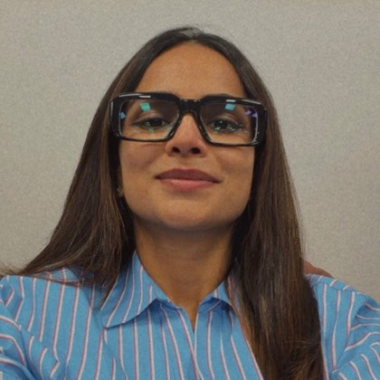

Design Manager
Bajaj Finserv Health, Pune. 2019 to present.
Design Manager and product design leader, 11+ years across product design, design systems and DesignOps. I work best on complex products: many moving parts, several kinds of user, and no obvious shape yet.

Bajaj Finserv Health, Pune. 2019 to present.
Bachelor's degree, User Experience.
01 — The spine
Those three sentences are the whole argument, and they are meant in order. I build products — WorkPerks and Vytals. I build the systems that make products repeatable — Capsule, and the DesignOps operating system around it. I build the organisations that make both possible — a design function that went from two people to twenty.
AI is not a fourth pillar. It is what extended the first one into working software: on WorkPerks I led the product and then built the app, using AI-assisted development to carry design decisions into frontend, backend and integration work. It hasn't replaced my judgement. It has extended how far I can carry it.
02 — Career journey
2019 —
Grew the design function from two to twenty, structured into pods, without diluting culture or the quality bar. Reached 100% in-house design ownership through a phased twelve-month plan. Promoted twelve designers internally on a competency framework I built. Led WorkPerks and built the app. Created Capsule. Owned design across HRX, DRX and Salesforce CRM, and established the organisation's first structured UX research programme.
2015–19
A Netherlands-based company building software for businesses — ERP, document management and workflow automation. Owned user experience across five products, two of them taken from inception to execution: the concept, the experience and the shipped interface.
2014
Worked on Darshanarthi, the TCS visitor management system, alongside senior designers on wireframes and prototypes. Ran user research and usability testing and folded the findings back into the design. It is where the practice got its methods.
2010–15
Pune.
03 — Design philosophy
01
User-centred design is not a research phase. It is the discipline of not designing a screen until you can say what is actually wrong.
02
Decision frameworks exist so that quality does not depend on me being in the room. If it does, I have built a bottleneck rather than a practice.
03
When a product can reason, what the interface owes the person using it changes. What design owes them does not.
04
04 — Contact
I'm most useful on complex products — the ones with a lot of moving parts, several kinds of user, and no obvious shape yet.
Pune, India